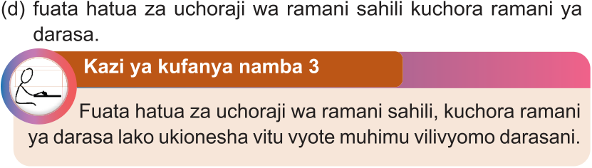

Kazi ya kufanya namba 3

Fuata hatua za uchoraji wa ramani sahili, kuchora ramani ya darasa lako ukionesha vitu vyote muhimu vilivyomo darasani.

Fuata hatua za uchoraji wa ramani sahili, kuchora ramani ya darasa lako ukionesha vitu vyote muhimu vilivyomo darasani.